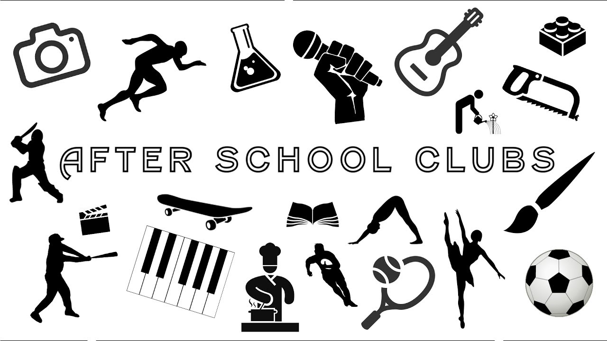

Campus Life

School Church
Established in August 1978
A church is a building used for Christian worship services and other Christian religious activities. In traditional Christian architecture the plan view of a church often forms a Christian cross; the center aisle and seating representing the vertical beam with the bema and altar forming the horizontal. Towers or domes may inspire contemplation of the heavens.

School Library
Built in June 1980
Libraries provide quiet and conducive areas for studying, as well as common areas for group study and collaboration. Libraries are also community hubs, where programs are delivered and people engage in learning. Modern libraries extend their services beyond the physical walls of a building by providing material accessible by electronic means, including from home via the Internet.

School Auditorium
Built in 1982
An auditorium is a room built to enable an audience to hear and watch performances. For movie theatres, the number of auditoria (or auditoriums) is expressed as the number of screens. Auditoria can be found in entertainment venues, community halls, and theaters, and may be used for rehearsal, presentation, performing arts productions, or as a learning space.
School Achievements

Won First Prize in an Inter-School Debate on the Environmental Pollution levels.
In a recent debate against three other schools, none other than our very own St. Xavier's School won! The topic was environmental pollution levels, and five students were selected from each school as a representative. Our five students did an excellent job og portraying the message of how seroius a threat pollution was to our society!
What's New at our School
-
Schools Announcing new Clubs
With the number of COVID-19 cases increasing day-by-day, the school has expanded their selection of clubs to a brand-new selection of after school clubs! Such examples include a guitar club, a dancing class as well as many different types of athletics and sports, different languages, a science club where you get to do different types of experiments, an art club, a knitting club, a debate club, a speech club, engineering and coding!
-
COVID-19 cases cause schools to shut down
Since the COVID-19 cases have increased, the schools here have been forced to shut down! Coronavirus disease 2019 is a contagious disease caused by severe acute respiratory syndrome coronavirus 2. The first case was identified in Wuhan, China, in December 2019. Symptoms of COVID-19 are variable, but often include fever, cough, fatigue, breathing difficulties, and loss of smell and taste.
Contact Us
You can contact me at
amazing10mt@gmail.com
I am also a coder at Whitehat Jr, so you can reach out to me that way too!